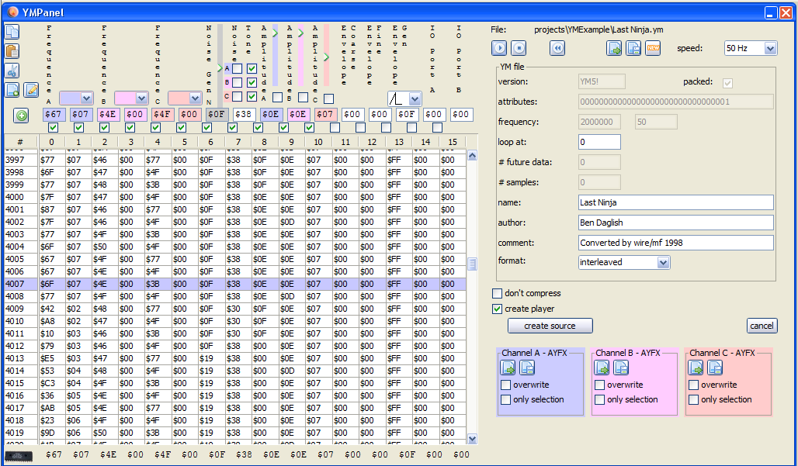
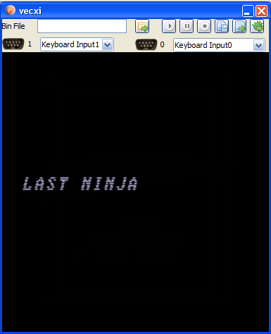

add a file to the project
Note:
YM generation can take a few seconds to finish. If you open the utility directly, the output goes to the debug window. So if you want to follow the progress - you should open the debug log.
Once generation finishes, a vedi window will open!
--
YM file conversion and play code is generated in vedi, using the popup on the project file tree. By chosing the entry "build vectrex YM" the dialog is displayed. (see also the vedi->YM-Conversion documentation(s))
The popup menu is only activated while a ym file is selected in the current project. You have to download (or create ym) files befor you can convert them (in the configuration section under edit you can download a few thousand [wait a little for the download to finish]).
If you have a file available, you can easily add the file to your project. Place the mousecursor over the project name and press the right mouse button.
add a file to the project
Chose "add file"... and navigate in the resulting file choser to the file of your desire.

add a ym file
By chosing a file - the file is copied to the project directory and is NOW available.

build vectrex YM
Selecting "build vectrex YM" opens the - dialog: (which is explained in "vedi->YM-Conversion II")

convert ym dialog
Exiting the above dialog with "create" will (...hm...) create sources in the current project directory [the dialog must be closed manually, this can be done directly after generation started, you do not have to wait until generation of the source is finished].
(The name of the generated sources are derived from the chosen file. In the following it is assumed that the name given is "Last Ninja.ym".)
The generated sources are accompanied by an example ym player routine [if create player was selected in the dialog].
Following sources are generated:
ymPlayer.i
the subroutines to play ym-data
VECTREX.I
which is needed by the source
LASTNINJ.asm
a file with the actual data
Last NinjaMain.asm
a "main" file, with an example vectrex runnable "cartridge" file
A vectrex playable binary file can be generated by setting the generate "Last NinjaMain.asm" file as the main file in the project.

set example main
The format and the actual display routines are documented in the source code - and quite extensibly in the above other mentioned pages.
Just a few bullet points...
the initialization routine is called init_ym_sound and expects the ym-sound data structure in register U. This must be called befor a new ym-file is to be played.
the actual ym routine is called do_ym_sound that routine should be places somewhere in your main loop
the generated ym player respects the settings of the dialog (like skipping certain registers, or playing uncompressed ym data)

example main

example ym player